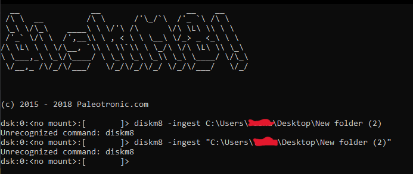

The rush to revive Elk Cloner
Since March was now dusted off I was proud I had at least done something for #MARCHintosh on the net, that is emulating the Twiggy Mac prototype and the Sony Test pre-release version of System 1 in Mini vMac (which I need to do a blog post on). This was my first time partaking in something like this and well, it was great, even if it was only one thing compared to others who had physical Macs they could use.
That was until April rolled over. I had not realized people had made a new event of sorts called "Appril2", which is supposed to sound like Apple 2. An online hashtag for the Apple ][?! What was I supposed to do? I knew what I was gonna do after thinking for a while, and that was trying out Elk Cloner, the program with a personality. I picked to do something different... which turned out to be a lot harder to get working than I had expected.
So, what is Elk Cloner?
Elk Cloner was one of the first documented microcomputer viruses to spread "in the wild," which means it spread outside of the computer system or laboratory where it was created. Elk Cloner ran on the Apple II operating system and was distributed via floppy disk. Rich Skrenta, a programmer and entrepreneur, wrote it as a 15-year-old high school student in 1982 as a joke and put it on a game disk. Although having the same capabilities as a boot sector virus, it was built as a joke.
Elk Cloner was attached to a game that was then set to play. The virus was released the 50th time the game was launched, however instead of playing the game, it changed to a blank screen that displayed a poem explaining the virus. A copy of the virus was put in the computer's memory if it was booted from an infected floppy disk. When a clean disk was placed into the machine, the complete DOS (including Elk Cloner) was copied to the disk, allowing the virus to spread from disc to disc. Elk Cloner additionally added a signature byte to the disk's directory, indicating that it had previously been infected, to prevent the DOS from being constantly re-written each time the disk was accessed.
The first attempt: Not even knowing what I am doing
Getting Elk Cloner turned out to be more of a feat than I expected. Skrenta's website has the 6502 source code for Cloner 2.0 and an Apple II disk image of the Cloner source code. It takes a lot more than either grabbing that source code and compiling it in an online 6502 assembler or getting that floppy image and popping it into your Apple ][ to run it.
When I first started my first thought was to try and run the disk image as I presumed that had the stuff already so I tried this in the AppleWin emulator. What was I greeted with? This:

What you see right now is the contents of the disk image which has the source code as ".obj" and ".obk" along with the program itself. Trying to run it results in the Apple II telling me there is a file type mismatch and break in 30 which I presume is line 30 of the code:

This is when I reached out to the nerds of Mastodon for help. I was suggested to use an assembler thought was to go to an online assembler because you would think "oh, it's 6502 assembly code, I can just assemble this online". Nope, you can't. Why? You are going to run into errors about there being a syntax error on line 1 like this:

Not very nice, right? This is when I decided to head to Mastodon for help. The answer? Most likely assembler dialect issues. The source code for Elk Cloner is most likely in ORCA/M assembly which meant I could not assemble this in an ordinary online 6502 assembler so I was suggested to use the cross-assembler Merlin 32, meaning I had to run this under Linux since I couldn't get it to work under Windows.
The second attempt: Assembling the source code the right way!
Since Merlin32 didn't seem to wanna run under Windows I had to get my trusty old late 2006 iMac running Linux Mint 21. It is a pain in the butt sometimes to use this machine as I often have to clear my desk to get to it.
Now with the iMac up and running it was time to assemble the source code, and get Merlin32 first.
When Merlin had finished downloading and I had installed it I set up a folder containing the source code in a ".s" file and ran the terminal from within that folder.

I thought that assembling it to get a binary that could be run was hard but it was as simple as typing in "merlin32 cloner.s" and pressing enter without any extra parameters.


After it was done I got two files. A file that looks blank called cloner and one for file information. The blank file is the binary I needed so I transferred these to Windows.

Now with the binary in my hands it was time to get this onto a disk image... which was also hard. My usual program couldn't read ".dsk" so once again I went to Mastodon for help. I was given a few suggestions, the first one being Diskm8.

I had to mount the disk I wanted to use then copy the files over using the CLI.

Now with the binary file on the disk using Diskm8, it was time to try it out.

Trying to run it gave me error #13. I later discovered I needed to use BRUN instead of RUN. Unfortunately, it crashed the emulator.
If you want to check out the compiled stuff, you can go here.